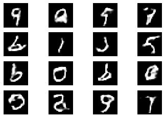

DCGAN Example with MNIST Dataset¶
[1]:
import os
import tempfile
import numpy as np
import tensorflow as tf
from matplotlib import pyplot as plt
from tensorflow.keras.models import load_model
from tensorflow.python.keras import layers
import fastestimator as fe
from fastestimator.op import TensorOp
from fastestimator.op.tensorop import Loss, ModelOp
from fastestimator.trace import ModelSaver
[2]:
#parameters
batch_size = 256
epochs = 50
steps_per_epoch = None
validation_steps = None
saved_model_path = 'gen_epoch_45_step_10764.h5'
Prepare data¶
We create Pipeline with MNIST data. With the help of Myrescale op, each image is normalized to between -1 and 1.
[3]:
class Myrescale(TensorOp):
"""Scale image values from uint8 to float32 between -1 and 1."""
def forward(self, data, state):
data = tf.cast(data, tf.float32)
data = (data - 127.5) / 127.5
return data
[4]:
(x_train, _), (_, _) = tf.keras.datasets.mnist.load_data()
data = {"train": {"x": np.expand_dims(x_train, -1)}}
pipeline = fe.Pipeline(batch_size=batch_size, data=data, ops=Myrescale(inputs="x", outputs="x"))
Create network¶
Keras models¶
First we create tf.keras models for generator and discriminator.
[5]:
def make_generator_model():
model = tf.keras.Sequential()
model.add(layers.Dense(7 * 7 * 256, use_bias=False, input_shape=(100, )))
model.add(layers.BatchNormalization())
model.add(layers.LeakyReLU())
model.add(layers.Reshape((7, 7, 256)))
assert model.output_shape == (None, 7, 7, 256) # Note: None is the batch size
model.add(layers.Conv2DTranspose(128, (5, 5), strides=(1, 1), padding='same', use_bias=False))
assert model.output_shape == (None, 7, 7, 128)
model.add(layers.BatchNormalization())
model.add(layers.LeakyReLU())
model.add(layers.Conv2DTranspose(64, (5, 5), strides=(2, 2), padding='same', use_bias=False))
assert model.output_shape == (None, 14, 14, 64)
model.add(layers.BatchNormalization())
model.add(layers.LeakyReLU())
model.add(layers.Conv2DTranspose(1, (5, 5), strides=(2, 2), padding='same', use_bias=False, activation='tanh'))
assert model.output_shape == (None, 28, 28, 1)
return model
[6]:
def make_discriminator_model():
model = tf.keras.Sequential()
model.add(layers.Conv2D(64, (5, 5), strides=(2, 2), padding='same', input_shape=[28, 28, 1]))
model.add(layers.LeakyReLU())
model.add(layers.Dropout(0.3))
model.add(layers.Conv2D(128, (5, 5), strides=(2, 2), padding='same'))
model.add(layers.LeakyReLU())
model.add(layers.Dropout(0.3))
model.add(layers.Flatten())
model.add(layers.Dense(1))
return model
FEModel¶
Next, we group the tf.keras models with tf.optimizers into FEModel.
[7]:
g_femodel = fe.build(model_def=make_generator_model,
model_name="gen",
loss_name="gloss",
optimizer=tf.optimizers.Adam(1e-4))
d_femodel = fe.build(model_def=make_discriminator_model,
model_name="disc",
loss_name="dloss",
optimizer=tf.optimizers.Adam(1e-4))
The FEModel and Loss will be grouped into Network. Let’s define the loss functions.
Loss functions¶
We define the generator and discriminator loss. Loss can have multiple inputs and outputs.
[8]:
class GLoss(Loss):
"""Compute generator loss."""
def __init__(self, inputs, outputs=None, mode=None):
super().__init__(inputs=inputs, outputs=outputs, mode=mode)
self.cross_entropy = tf.keras.losses.BinaryCrossentropy(from_logits=True,
reduction=tf.keras.losses.Reduction.NONE)
def forward(self, data, state):
return self.cross_entropy(tf.ones_like(data), data)
[9]:
class DLoss(Loss):
"""Compute discriminator loss."""
def __init__(self, inputs, outputs=None, mode=None):
super().__init__(inputs=inputs, outputs=outputs, mode=mode)
self.cross_entropy = tf.keras.losses.BinaryCrossentropy(from_logits=True,
reduction=tf.keras.losses.Reduction.NONE)
def forward(self, data, state):
true, fake = data
real_loss = self.cross_entropy(tf.ones_like(true), true)
fake_loss = self.cross_entropy(tf.zeros_like(fake), fake)
total_loss = real_loss + fake_loss
return total_loss
Network¶
Once loss functions are defined, we group FEModel and loss functions into Network.
[10]:
network = fe.Network(ops=[
ModelOp(inputs=lambda: tf.random.normal([batch_size, 100]), model=g_femodel),
ModelOp(model=d_femodel, outputs="pred_fake"),
ModelOp(inputs="x", model=d_femodel, outputs="pred_true"),
GLoss(inputs=("pred_fake"), outputs="gloss"),
DLoss(inputs=("pred_true", "pred_fake"), outputs="dloss")
])
Create estimator¶
Trace is similar to callbacks in tf.keras. Here we use ModelSaver to save the training models to save_dir.
[11]:
save_dir=tempfile.mkdtemp()
[12]:
traces = [ModelSaver(model_name='gen', save_dir=save_dir, save_freq=5)]
Once everything is combined into Estimator, we can start traniing!
[13]:
estimator = fe.Estimator(network=network,
pipeline=pipeline,
epochs=epochs,
steps_per_epoch=steps_per_epoch,
validation_steps=validation_steps,
traces=traces)
Start Training¶
[ ]:
estimator.fit()
Generate images from random noise¶
We use the trained generator to generate images of digits.
[ ]:
model = load_model(os.path.join(save_dir, saved_model_path))
[19]:
images = model.predict(np.random.normal(size=(16, 100)))
[20]:
fig, axes = plt.subplots(4, 4)
axes = np.ravel(axes)
for i in range(images.shape[0]):
axes[i].axis('off')
axes[i].imshow(np.squeeze(images[i, ...] * 127.5 + 127.5), cmap='gray')

—